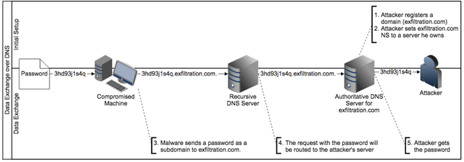

PacketWhisper
Site:
https://github.com/TryCatchHCF/PacketWhisper/PacketWhisper is a useful python tool that
exfiltrate
data via
DNS tunneling It use DNS A queries to transmit data via IPv4
addresses, so the we are only able to transmit 4-bytes per query
•
A record → maps a domain
name to an ipv4 address
